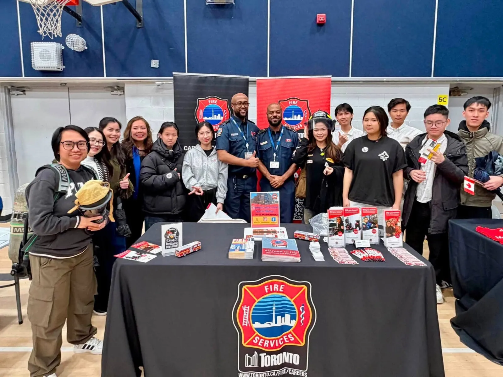

Chương trình thanh niên của CVCEC · Toronto
Viet Youth Readiness Hub
Sáng kiến thanh niên ra mắt tại Toronto vào tháng 4/2026, giúp thanh niên gốc Việt và thanh niên mới nhập cư tự tin hơn, phát triển kỹ năng lãnh đạo và công dân, và thấy mình thuộc về trường học, cộng đồng Canada.
4/2026
ra mắt tại Toronto
15+
thủ lĩnh trẻ nòng cốt được đào tạo trực tiếp
10
thủ lĩnh trẻ 16–20 tuổi: 2 trưởng nhóm và 8 mentor
300+
học sinh, thanh niên và phụ huynh được tiếp cận qua cẩm nang định hướng song ngữ
1 / 16
dự án Leading Urban Change, Đại học Toronto, 2026
50
em nhỏ trong sáng kiến an toàn dự kiến 2027–28
Dấu ấn 2026
Một năm của nhiều lần đầu tiên
| Thời gian | Thanh niên đã làm gì |
|---|---|
| 4/2026 | VYRH ra mắt tại Toronto cùng lớp tiếng Việt cho trẻ em và Tủ sách tiếng Việt; thanh niên gặp gỡ nhà tuyển dụng tại Hội chợ việc làm Davenport |
| 5/2026 | Lễ khai mạc Tháng Di sản châu Á tại Metro Hall, Toronto |
| 31/8/2026 | Buổi định hướng năm học mới và ngày hội tiếng Việt |
| 11–13/9/2026 | Thanh niên tình nguyện tại Asialicious Carnival |
| 2026 | Thủ lĩnh trẻ tham gia Hội đồng Thanh niên Don Valley North |
| 11/2026 | Thủ lĩnh trẻ tổ chức Ngày Văn hoá Việt Nam 2026 cho học sinh trường Vega Academy, Toronto, với trải nghiệm áo dài và phần thuyết trình của học sinh |
| 2027–28 | Các mentor trẻ đồng dẫn dắt Sáng kiến Sẵn sàng & An toàn cho Thanh niên Việt (dự kiến) |
Về VYRH
Sẵn sàng cho trường học, cho cộng đồng, sẵn sàng dẫn dắt
Viet Youth Readiness Hub (VYRH) do Hội đồng Văn hoá & Giáo dục Canada – Việt Nam, một tổ chức phi lợi nhuận liên bang, điều hành. VYRH quy tụ du học sinh mới sang và thanh niên gốc Việt sinh ra tại Canada, và mở cửa cho mọi gia đình.
Qua các buổi định hướng, mentoring, tình nguyện và dự án do thanh niên tự thực hiện, các bạn hiểu cách trường học và đời sống công dân ở Canada vận hành, rèn luyện khả năng lãnh đạo trong thực tế, và luôn gắn bó với tiếng Việt, văn hoá Việt.
Tham gia hoặc hợp tác với VYRH
Các bạn làm gì
Trải nghiệm thật trong đời sống cộng đồng Canada
Sẵn sàng cho trường học
Định hướng năm học mới và hỗ trợ đồng đẳng cho học sinh mới đến, gồm buổi định hướng và ngày hội tiếng Việt tháng 8/2026.
Học làm công dân
Các bạn tham gia hội đồng thanh niên địa phương, trong đó có Hội đồng Thanh niên Don Valley North, và tìm hiểu cách các quyết định được đưa ra trong cộng đồng.
Tình nguyện
Thanh niên tình nguyện tại các sự kiện, lễ hội cộng đồng như Asialicious Carnival tháng 9/2026.
Định hướng nghề nghiệp
Các bạn đã gặp nhà tuyển dụng và cơ quan công như Sở Cứu hoả Toronto tại Hội chợ việc làm Davenport tháng 4/2026.
Qua hình ảnh
VYRH trong hoạt động





Ghi nhận
Được chọn vào chương trình Leading Urban Change của Đại học Toronto
Dự án Bridging Heritage Language and Cultural Inclusion in Urban Education của CVCEC, do Nhà sáng lập kiêm Chủ tịch Phan Thị Quỳnh Trang dẫn dắt, là một trong 16 sáng kiến được chọn vào khoá 2026 của chương trình Leading Urban Change thuộc School of Cities, Đại học Toronto. Bà Trang đã hoàn thành chương trình vào tháng 6/2026.
Dự án đang xây dựng một mô hình thí điểm phù hợp chính sách, nhằm đưa việc học tiếng Việt, hoà nhập văn hoá và sự tham gia của thanh niên vào trường công lập đô thị, bắt đầu từ Toronto. VYRH là một phần của công việc này.
Về dự án Leading Urban ChangeChương trình liên kết
Việc học tiếp nối tại nhà
Hoà nhập công dân & trải nghiệm đô thị
Chuẩn bị học thuật, công cụ lãnh đạo và hiểu biết công dân cho du học sinh và thanh niên mới nhập cư, được định hình từ chương trình Leading Urban Change.

Tiếng Việt & văn hoá
Bài học tự học miễn phí trên Trường Tiếng Việt Của Em, với sự hỗ trợ của các giáo viên tiếng Việt giàu kinh nghiệm.
Khám phá nền tảng
Cẩm nang Du học Canada
Cẩm nang song ngữ về trường công lập Ontario, bằng OSSD và quy trình TDSB, có video và câu hỏi thường gặp. Miễn phí, không ràng buộc.
duhoccanada.cvcec.orgThủ lĩnh trẻ
Gặp gỡ các thủ lĩnh trẻ
Chúng tôi tự hào về sự trưởng thành trong học tập, hoạt động công dân và bản thân của các bạn. Tên và ảnh được chia sẻ khi có sự đồng ý bằng văn bản của phụ huynh.

Nguyen The Bao (Henry)
Đại sứ Thanh niên Tham gia Công dân
Một bạn trẻ tích cực lên tiếng cho tiếng nói thanh niên trong các dự án cộng đồng và công dân.
Ngo Thai Nhat An (Hailey)
Thủ lĩnh trẻ Truyền thông Sáng tạo
Dẫn dắt kể chuyện sáng tạo và chiến lược hình ảnh, lan toả tiếng nói thanh niên trên các nền tảng số.
Tham gia Viet Youth Readiness Hub
Chào đón thanh niên, phụ huynh, trường học và đối tác cộng đồng.